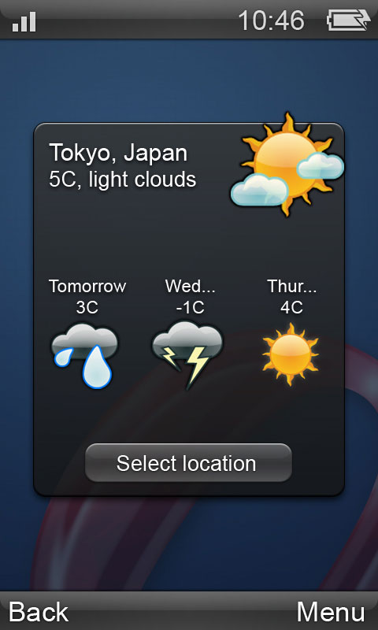
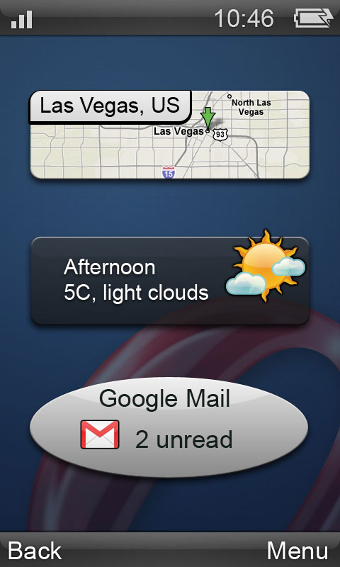

Widget modes: docked, widget, and more
24th April 2012: Please note
Starting with Opera 12, Opera Widgets will be turned off for new users and completely removed in a later release. If you're interested in building addons for Opera, we recommend going with our extensions platform — check out our extensions documentation to get started.
Introduction
On some platforms, the Opera Widgets runtime supports more than one mode for the widget to run in, for instance a mobile phone may support modes to show widgets one at a time in fullscreen mode, and to show multiple widgets, with each widget displayed in a separate slot on the screen.
The widget runtime will tell the widget what mode it should run in. The runtime has a fallback solution in case the widget does not support the requested mode. The widget may request a default mode.
Widget modes defined
The Opera Widget runtime is available on many platforms, including mobile phones, game consoles, media players, set top boxes and desktop computers. The widget runtime has been integrated into the device to best support the device’s characteristics. Widgets may be requested by the runtime to display in one of four different modes:
The default mode of the widget is determined by the defaultmode attribute of the widget element in the widget’s config.xml file. The Widget runtime may request the widget to switch between the modes, eg from docked to widget and back. Docked mode may for instance be used to show widgets on the phone idle screen.
Widget mode
The widget mode is the default mode and how widgets traditionally have been displayed. Each widget is rendered in its own window, separate from the browser and without any chrome. The size of the widget is determined by config.xml. The widget author needs to supply mechanisms for resizing and moving the widget if this is desired. This is the default mode if nothing else is specified in the widget’s config.xml file.
Application mode
Like the widget mode, widgets in application mode are rendered in their own window. Unlike the widget mode, windows of widgets in application mode have system chrome. This means widgets in this mode look more native to the platform they are running on. The widget can be moved and resized as a normal window. You can set application mode to be the default mode by setting the defaultmode attribute of the widget element to ‘application’ in the widget’s config.xml file.
Application mode is supported on Opera 10.2+ on Desktop. Widget mode is the default mode.
We recommend developers start using application mode as this makes widget look more native to the platform they are running on. As chrome buttons aren’t required for widget mode either, this will reduce the amount of code the developer will have to write and maintain.
Application mode is the default on the T-Mobile Web’n’Walk platform. Widget mode is not supported on this platform.

Figure 1. Application widget with chrome
Fullscreen mode
Fullscreen mode looks like application mode except that the widget is rendered as an otherwise maximized native application. You can set fullscreen mode to be the default mode by setting the defaultmode attribute of the widget element to ‘fullscreen’ in the widget’s config.xml file.

Figure 2: A Widget in fullscreen mode
Docked mode
The docked mode, also known as micro widget mode, is a minimized version of the widget, typically docked into a panel – it will generally show summary information, a status icon, or similar. An example is a small news ticker where news items move across a small horizontal bar, or a traffic light to signify the health of a monitored device. A widget is not dockable by default – in order to make it dockable you need to set the dockable property of the widget element to ‘yes’ in the widget’s config.xml file.

Figure 3: Widgets in docked mode
Docked mode is currently supported on Opera Mobile 9.5 for S60 and Vodafone and the T-Mobile Web’n’Walk platforms.
Using CSS to adapt to the current widget mode: The -o-widget-mode media query
You may style a widget differently for each mode by using a new media query property called -o-widget-mode. Possible values for the property is ‘widget’, ‘application’, ‘fullscreen’ and ‘docked’. You can use it as part of a media query like this:
@media all and (-o-widget-mode:application) {
/* We don't need to display our own user chrome controls, since
real chrome is provided */
.fakeChrome { display: none; }
}
By doing a query for the -o-widget-mode property without a value, you can determine if the platform supports widget modes at all:
@media all and (-o-widget-mode) {
div.friendlyMessage {
content: "I will be displayed if I am a modern widget";
}
}
Adapting to different widget modes: WidgetModeChangeEvent
When the widget mode changes, a WidgetModeChangeEvent is fired on the widget object. By catching these events, you can programatically adapt the widget to its new state. An example is changing the DOM of the widget when it goes in and out of docked mode:
widget.addEventListener( 'widgetmodechange', function (e)
{
//Change the DOM to show minimal status information
}, false );
This event does not bubble.
Resources
This article is licensed under a Creative Commons Attribution, Non Commercial - Share Alike 2.5 license.
Comments
The forum archive of this article is still available on My Opera.
-

deutsch
No new comments accepted.ALFRED GÜLZOW
Thursday, April 26, 2012